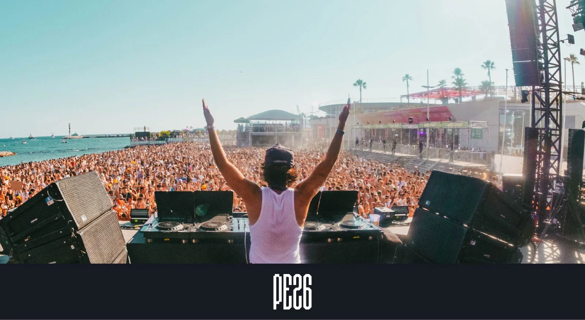
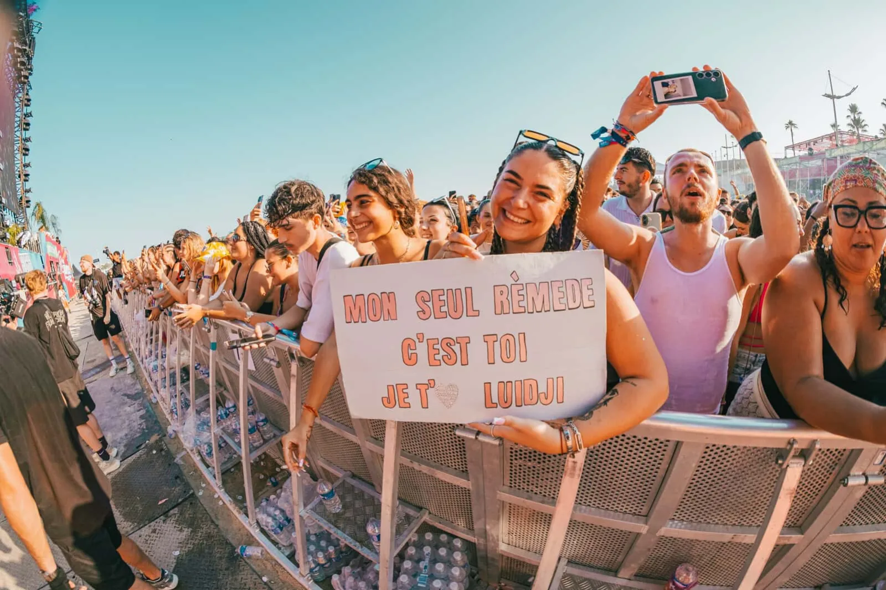
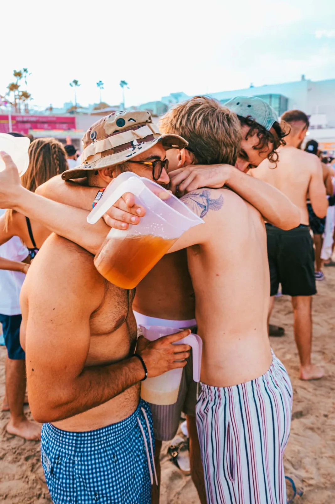

PE26, the party in the sand · © Les Plages Électroniques
+70
artists
5
stages
7 → 9
August · Cannes
The official #PE26 playlist · © Les Plages Électroniques × Deezer
20 years of electronic music on the Cannes Croisette
A festival that sets up its stages right on the Palais des Festivals beach, facing the sea, in the heart of Cannes: that's the idea that has kept the Croisette dancing for twenty years. For its anniversary edition, the event goes big, with three days of music from Friday, August 7 to Sunday, August 9, more than 70 artists across five stages, a dancefloor in the sand, sunsets over the bay and afters for those who refuse to go home. All of it with a lineup that fully embraces the split: mainstream headliners on one side, sharp club culture on the other. That's exactly the mix we're here for.
The 2026 lineup: three days, five stages
Friday, August 7 · Martin Garrix headlines
Day one hits hard right away: Martin Garrix, one of the biggest names on the EDM planet, headlines the Scène Plage alongside Mosimann, a showman who traded pop for house and a regular at the festival, the massive kicks of Nico Moreno and the sun-soaked house of Sonny Fodera, boss of the Solotoko label whose "Asking" has passed 100 million streams. Over on the Scène Terrasse, you'll find Venga, one of the new faces of French tech house. If you read us regularly, the name rings a bell: she also plays Family Piknik a week earlier. Twice on our route in the same summer, that's no coincidence.
Saturday, August 8 · Marshmello, Amelie Lens and Interplanetary Criminal's UK garage
Saturday shifts gears. Marshmello and his white helmet land on the Scène Plage, with Amelie Lens, PLK and Vladimir Cauchemar, the masked producer from the Ed Banger stable we last saw tearing up the Rockstore at a My Life is a Weekend party. Nice's own Umbree, who blends bass music and tech house with rare stage energy, plays a home game. And it's also the day to leave the sand for La Centrale: Interplanetary Criminal, the man behind "B.O.T.A." with Eliza Rose, brings Manchester's UK garage to the club. For a bass music outlet like ours, it's the unmissable set of the weekend.
Sunday, August 9 · DJ Snake with Pardon My French
To close it all, DJ Snake takes over with his Pardon My French collective on the Scène Plage. But our eyes are also on the Gare Croisette, the diggers' stage of the site: it hosts Miley Serious, founder of 99CTS Records and Rex Club resident, whose sets move between bass, breaks and drum & bass, and OG Maxwell, co-founder of Piñata Radio and Plaisance Records in Montpellier. Broken beat, footwork, house: the sound of our hometown, exported to the Croisette. Obviously, we'll be front row.
The official aftermovie of the 2025 edition · © Les Plages Électroniques
Credits
Produced by BACKYARD · Directed by Hugo Martin & Ruben Rigodiat-Calciati · Edited by Terence Nury
Cam: Jessie Hardeman, Tristan Burdin, Simon Hugues, Hugo Martin, Ruben Rigodiat-Calciati · Drone: Simon Hugues
Tracklisting
1. Tiësto & Sexyy Red · OMG!
2. ASDEK & Vladimir Cauchemar · water
3. Booba feat. SDM · Dolce Camara
4. Charlotte de Witte & Amelie Lens · One Mind
5. Peggy Gou · Lobster Telephone
6. horsegiirL · eat, sleep, slay,
7. Jersey · Colors Turn Grey


The Palais des Festivals beach, turned into a dancefloor · © Les Plages Électroniques
Family Piknik in Montpellier on the first weekend of August, Cannes the week after. Two festivals in seven days, and the same urge: filming the South of France's summer.
Our picks
We fully intend to be there
Sónar in June, Family Piknik on August 1-2, and Les Plages Électroniques right after: summer 2026 is stacked, and we're not complaining. A festival celebrating its 20th anniversary on a mythical beach, with giants on the main stage and UK garage in the club, is exactly the kind of playground we love telling in video. One useful heads-up for those still hesitating: as we write these lines, the festival already announces regular passes close to selling out. See you August 7 to 9 on the Palais des Festivals beach. And if all goes well, we'll tell you the story from the inside.